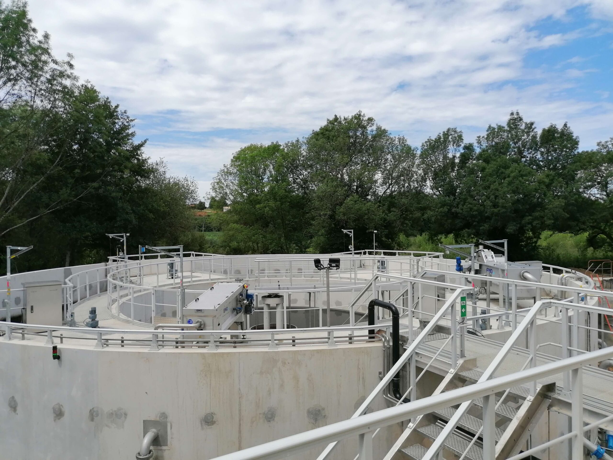
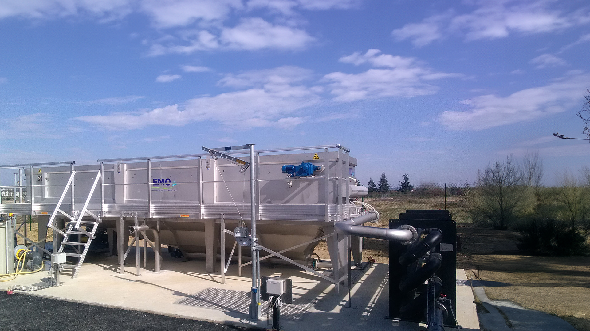

Increase sludge dry solids content before dewatering and digestion with high-performance European equipment — technology consolidated for over 50 years in sludge and wastewater treatment.

Continuous gravity belt thickening — the most efficient solution for increasing sludge dry solids content before dewatering or digestion.
The OMEGA Gravity Belt Thickener (GBT) thickens sludge by draining free water through a moving gravity drainage belt — a simple, highly energy-efficient process. Conditioned sludge with polymer is distributed uniformly over the drainage belt, where free water drains by gravity through the belt and is collected in a drain tray.
The result is thickened sludge with 4–8% DS content, ideal for feeding dewatering equipment (Belt Filter Press, Screw Press, Centrifuge) or anaerobic digesters — significantly reducing the volume to be processed in subsequent stages.
| Belt width | 0.5–2.5 m |
| Belt length | 2 m |
| Hydraulic flow | Up to 40 m³/h |
| Belt width | 1.0–3.0 m |
| Belt length | 3 m |
| Hydraulic flow | Up to 80 m³/h |
| Belt width | 1.5–3.0 m |
| Belt length | 4–6 m |
| Hydraulic flow | Up to 200 m³/h |
Sludge thickening by dissolved air flotation — the ideal solution for light sludge and activated sludge that is difficult to thicken by gravity.
The DAF (Dissolved Air Flotation) thickens sludge by introducing millions of microscopic air bubbles into the pressurized sludge. The bubbles adhere to the sludge flocs, reducing their apparent density and causing them to float to the surface, forming a concentrated float layer that is mechanically skimmed off.
EMO France's DAF units (ALPHA, DELTA, and GAMMA series) are especially effective for activated and biological sludge that is light, bulky, or difficult to thicken by gravity. With DS content output of 4–6% and solids capture above 95%, the DAF is the ideal complement to the GBT in the pre-dewatering sludge treatment chain.

Circular DAF unit. Compact design for small to medium WWTPs.
| Capacity | Up to 150 m³/h |
| DS outlet | > 95% |
Rectangular DAF unit. Medium to large-scale WWTPs.
| Capacity | Up to 350 m³/h |
| DS outlet | > 95% |
High-capacity rectangular DAF for large-scale installations.
| Capacity | Up to 650 m³/h |
| DS outlet | > 95% |
Thickening of primary and secondary sludge before dewatering or digestion
Treatment of high-flow industrial sludge with variable dry solids content
Reduced volume in subsequent dewatering stages — lower polymer and energy consumption
Optimizing anaerobic digestion feed by thickening sludge to ideal DS for biogas production
Light and activated sludge that is difficult to thicken by gravity methods
Complete thickening + dewatering + drying chain with EMO France equipment
Our technical team evaluates your sludge profile and recommends the GBT or DAF ideal for your plant.